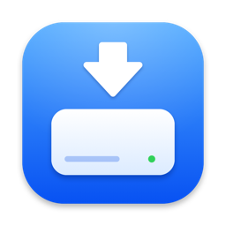
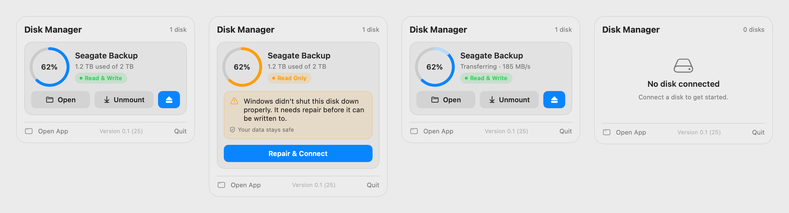
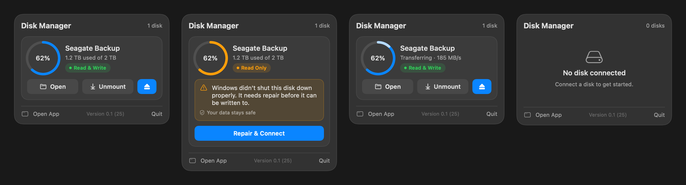

Read and write NTFS disks from the menu bar. Calm, fast, and careful with disks that Windows left in a risky state.
خواندن و نوشتن روی دیسکهای NTFS در مک، از نوار منو
Download for macOS View on GitHubv0.1 · Apple Silicon · macOS 15+ · not notarized: the DMG includes a one-click helper


A disk Windows left hibernated (Fast Startup) or unclean stays read-only, with a plain explanation. Only a dirty disk offers Repair & Connect.
Three separate actions. An unmounted disk shows as “Not mounted” with a Mount button, even if you unmounted it from Finder.
The app never starts a second driver on a disk one of its own already serves, so a restart can't corrupt a volume.
Quick NTFS format in the main window, behind a typed confirmation. It refuses internal disks and non-NTFS partitions.
English by default, Persian on request, with Persian digits. Light, dark or automatic.
Menu bar app with notifications when a transfer finishes or a disk needs attention, and optional launch at login.
macOS can only write safely when Windows shut the disk down cleanly. In Windows, turn off Fast Startup (Power Options → Choose what the power buttons do) and use Shut down, not Restart or Hibernate.
| Symptom | Fix |
|---|---|
| “macOS is blocking access” | Turn on NTFS (the app, not only the helper) in Full Disk Access, then replug. |
| Mount starts, then disappears | The macFUSE extension is off: enable it in File System Extensions. |
| “Windows is hibernated” | Shut Windows down fully (Shift + Shut down) and replug. |
| Helper “not enabled” or “unreachable” | Run NTFS --reinstall-helper once and approve it in Login Items if asked. |
Measured on a USB 3 flash drive (raw read about 150 MB/s): around 65 MB/s read and 12–15 MB/s write through the FUSE path. Mount options made no meaningful difference, so the defaults are kept. A faster disk is the real fix.
swift test # 78 unit tests bash scripts/build-app.sh # signed build/NTFS.app bash scripts/make-dmg.sh # dist/NTFS-<version>.dmg
SwiftUI, Swift 6. A root helper daemon (SMAppService + XPC) runs ntfs-3g over macFUSE; all logic lives in a UI-free Swift package target, NTFSCore.